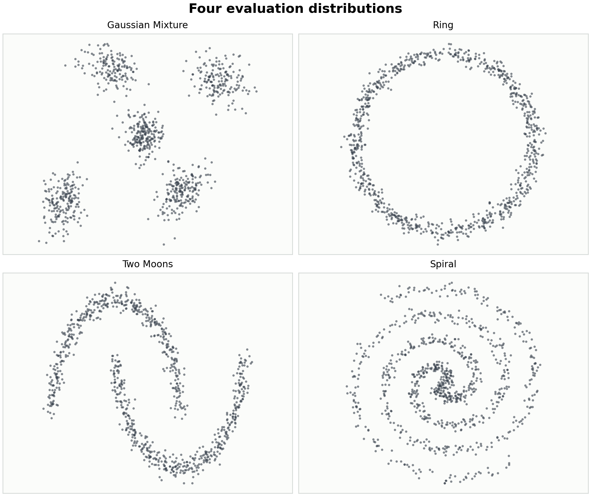
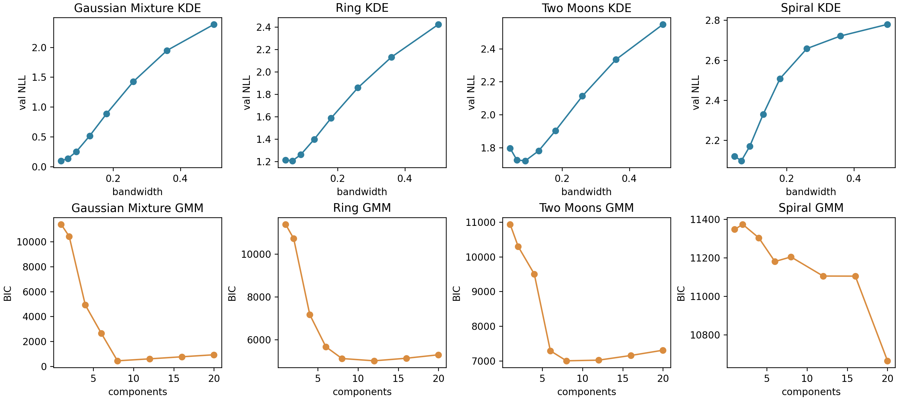
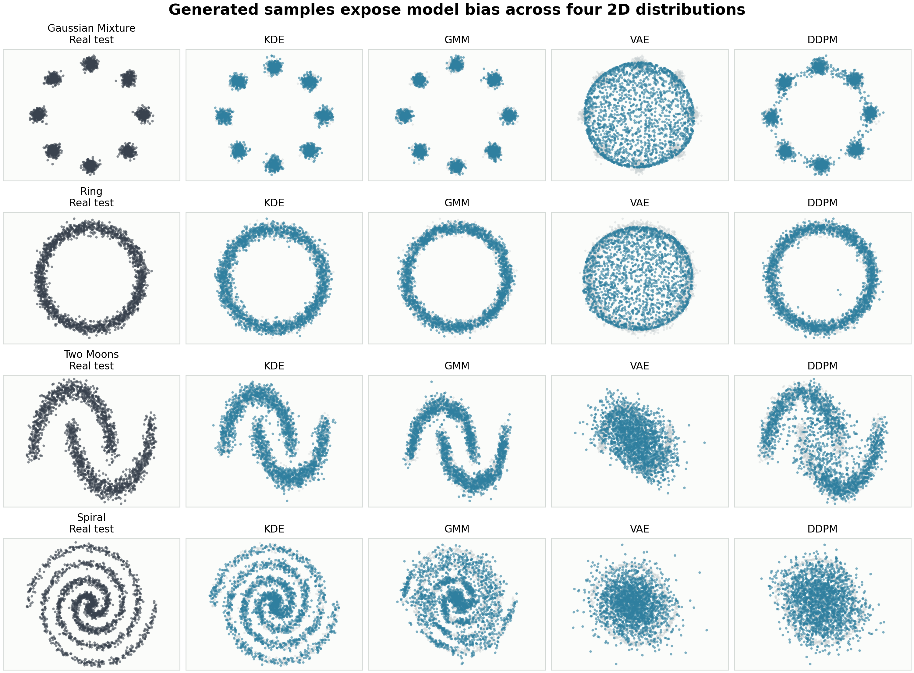
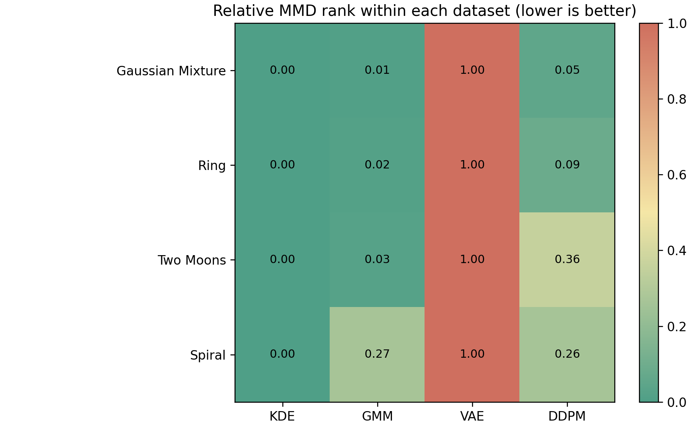
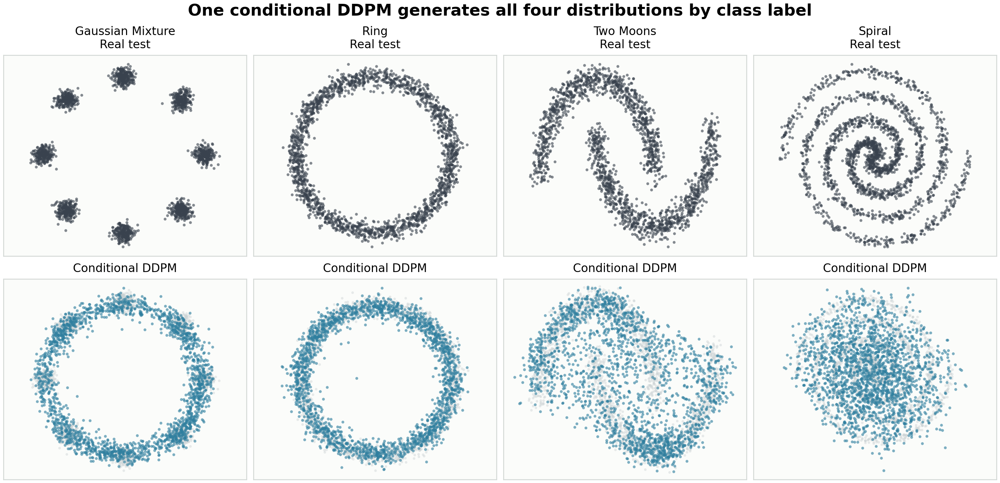
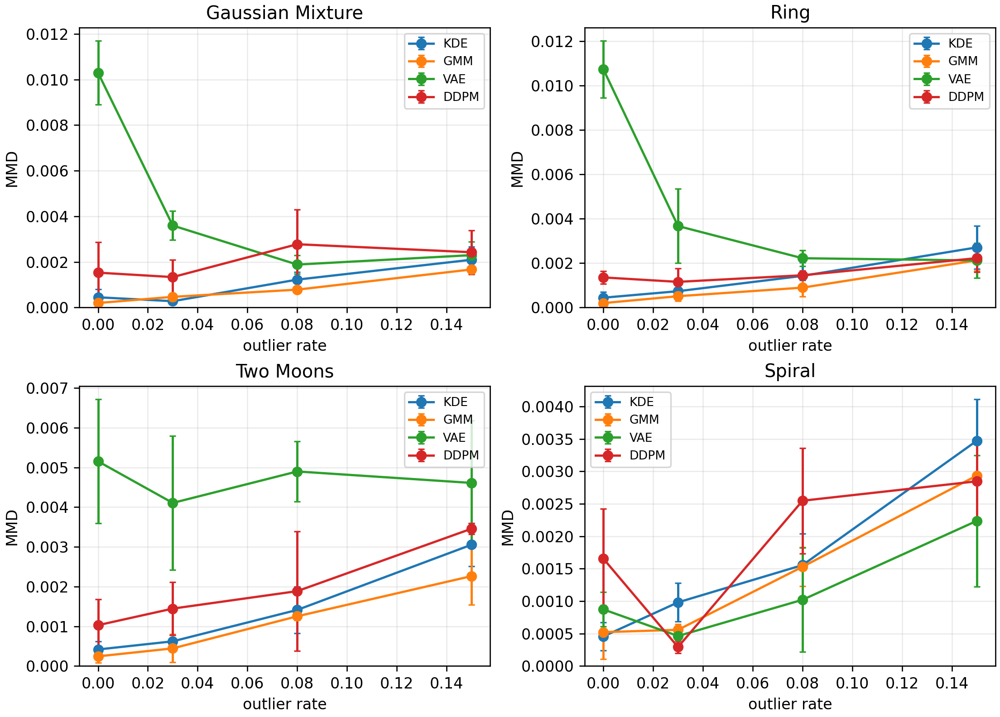

二维复杂分布生成建模的比较研究
比较 KDE、GMM、VAE 和 DDPM 在多峰、闭合支撑、弯曲流形与螺旋结构上的生成能力。
不同生成模型的结构假设，分别适合哪些二维几何分布？
4 类分布 × 4 类模型 × 3 个随机种子，另含条件 DDPM 与 hidden test 检查。
KDE 在当前低维设置中是最稳定基线；模型新旧不是关键，假设匹配更重要。
浅色交互式 HTML，可键盘翻页，也可浏览器打印为 PDF。
从题目到结论：按建模链条展开
题目与任务
四类二维分布，建立生成模型并评价生成质量。
数学建模
把任务表述为学习未知分布并从中采样。
评价指标
NLL、MMD、SWD、Precision、Coverage 和支撑覆盖率。
实验结果
可视化、主指标、hidden test 与鲁棒性分析。
拓展与结论
条件 DDPM、异常点污染和整体模型取舍。
题目关注的是“生成一组合理样本”
与分类、回归不同，生成建模不只关心单点预测，而是关心整组样本是否符合真实分布。
- 是否覆盖真实支撑，避免模式遗漏。
- 是否保留空洞、弯曲流形、螺旋等几何结构。
- 是否把样本生成到低密度区域。
学习 p_c(x)，并采样 y ~ p̂_θ(x)
四类分布相互独立，主实验分别为每类训练无条件模型；拓展实验使用一个条件 DDPM 按标签生成。
数据很低维，但几何结构并不简单

8 个模式，主要考验多峰覆盖。
闭合圆环，中心空洞不能被填满。
两条非凸弯曲支撑，模式分离明显。
双臂螺旋，要求较强的局部贴合能力。
实验管线：生成、训练、采样、评价
数据生成
复现题目给定生成机制，按不同 seed 生成 train/test/hidden。
标准化
使用训练集均值和标准差；测试集、hidden 与生成样本保持同一坐标尺度。
模型训练
KDE/GMM 选超参数，VAE/DDPM 进行神经网络训练。
采样
每类每模型生成 2000 个新样本。
评价
用多指标和可视化共同判断生成质量。
经典密度估计：直接利用样本邻域
不强加有限高斯成分假设，二维任务中样本覆盖充分时很强；关键在带宽选择。
适合多峰分布，也能用多个局部高斯近似曲线；但单个成分仍是椭圆型假设。

神经生成模型：用优化学习非线性结构
训练稳定、解释清楚；但连续潜空间和重构误差容易带来过平滑。
可以表达复杂几何，但训练和采样成本更高；训练不足时容易偏散。
本任务是二维合成分布。经典模型可以直接利用局部邻域结构，神经模型则依赖优化学习几何形状。二者的差异正好能揭示：模型假设是否贴合数据，比模型“新旧”更重要。
- KDE：无强形状假设，局部贴合强。
- GMM：显式密度好，但椭圆成分有局限。
- VAE：平滑映射易填低密度空白。
- DDPM：表达能力强，但预算和稳定性关键。
评价不能只看一个分数
衡量测试样本在显式密度模型下的负对数似然。只对 KDE 和 GMM 报告。
比较两组样本的整体分布差异。越低表示生成分布越接近测试分布。
用多个一维投影近似 Wasserstein 距离，关注样本整体位置差异。
生成样本是否落在真实样本邻域内，反映“生成点质量”。
真实样本是否被生成样本覆盖，反映“模式覆盖程度”。
二维网格层面的覆盖检查，同时约束位置和局部几何。
因此，最终判断结合可视化、MMD/SWD、Precision/Coverage、支撑覆盖率和 NLL。
生成样本可视化：差异很直观

主结果：KDE 是最稳定的样本匹配基线

| 数据集 | 最低 MMD | 最低 SWD | 最高 Coverage |
|---|---|---|---|
| Gaussian Mixture | KDE | KDE | KDE |
| Ring | KDE | KDE | KDE |
| Two Moons | KDE | KDE | KDE |
| Spiral | KDE | KDE | KDE |
GMM 在部分分布上具有更高 Precision 与更低 NLL，但样本整体距离和覆盖上 KDE 更稳。
隐藏测试集：验证主结论不是测试集偶然性
- hidden split 使用未参与训练、调参和主结果讨论的数据。
- KDE 在四类分布上仍取得最低 MMD、最低 SWD 和最高 Coverage。
- GMM 在 Gaussian Mixture、Ring、Two Moons 上的 NLL 与 Precision 仍较好。
- 条件 DDPM 的 hidden 结果说明 GM 和 Spiral 仍是薄弱项。
详细结果分析：每个模型的失败方式不同
局部邻域假设贴合低维数据；对 Ring、Two Moons、Spiral 的弯曲支撑保持较好 Coverage。
多峰数据上很自然，NLL 与 Precision 常较好；但 Spiral 需要多个椭圆拼接，局部贴合受限。
生成样本常进入低密度区域。Ring 中心、Two Moons 空隙最容易暴露过平滑问题。
能生成 Ring 和 Two Moons 的大致结构；Spiral 上仍偏散，说明训练预算和网络规模还不够稳。
这说明低维合成任务不能简单按模型新旧排序，而要看数据形状、模型假设和评价指标。
条件 DDPM：一个模型按标签生成四类分布

- 类别嵌入参与反向去噪过程。
- Ring 较清楚，Two Moons 能看出月牙轮廓。
- Gaussian Mixture 被拉成近似环状，Spiral 仍偏散。
- 共享参数带来便利，也带来多分布干扰。
异常点鲁棒性：干净数据排名不能直接外推
- KDE 会在异常点附近放置核函数，抬高低密度区域估计密度。
- GMM 可能分配额外成分解释异常点，导致有效组分被浪费。
- VAE 和 DDPM 可能把异常点吸收到平滑生成分布中。
- 污染率变化时，神经模型指标波动更明显。

结论：模型假设是否贴合数据形状更关键
- KDE 在当前二维生成器和每类 2000 训练样本下最稳定。
- GMM 的显式密度有价值，但对长曲线支撑存在局限。
- VAE 的主要问题是过平滑，DDPM 的主要问题是训练成本和稳定性。
- hidden test 支持主结论，条件 DDPM 和鲁棒性实验提供了额外侧面。
加入 RealNVP 或 Neural Spline Flow 这类精确似然神经模型。这样既能保留神经网络表达能力，又能更公平地比较 NLL，并检验神经模型是否能同时获得好样本距离和好似然。
材料来源与演示使用方式
内容来自项目报告、实验脚本、结果表格和生成图像。图像复用 `results/figures/*.png`，指标来自 `results/*_summary.csv`。
可直接打开这个 HTML；方向键、空格、PageUp/PageDown 可翻页。
检索到 Reveal.js 约 71.7k stars、Slidev 约 47.2k stars、Marp 约 12.0k stars。最终采用无依赖静态 HTML，保留键盘翻页和全屏展示体验。
推荐演示时使用浏览器全屏；需要纸质稿时可直接打印为 PDF。